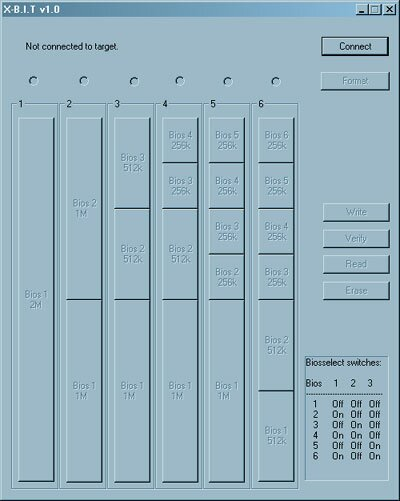
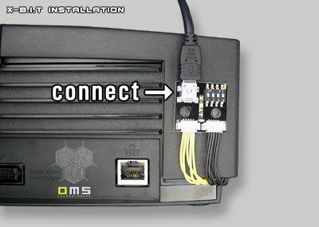
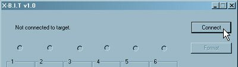
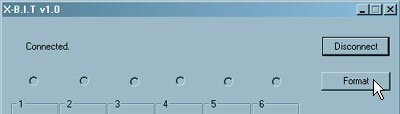
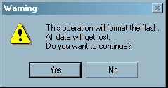
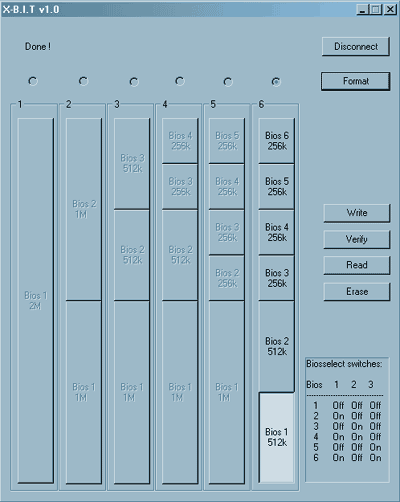
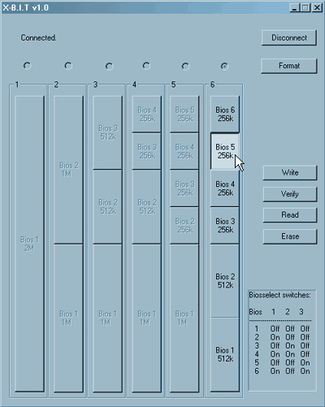
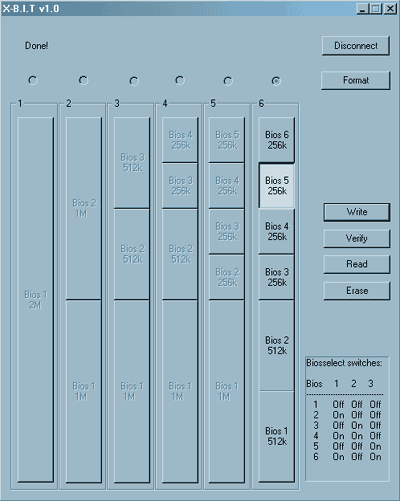
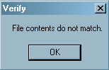
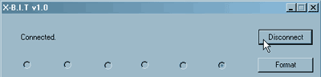

|
|
Step 1 :
Download the X-B.I.T PC-Flash Software at the "download" section and start the software. The following application window should be visible:

Step 2 :
Connect the X-B.I.T external board to the PCB with the bundled USB-cable.
Attention: Ensure that the "write protect"-seal of the X-B.I.T internal board is removed. You can flash the X-B.I.T even when it is not installed into the console.

Step 3:
Click on the "Connect"-button to establish a connection between the PC and the X-B.I.T:

If the connection is established the following message should appear:

Step 4:
Click on the "Format"-button:

Click on the "Yes" button to erase the 2MB Flash.
ATTENTION: You can erase the flash since the flash is empty when you open your X-B.I.T Kit. All data will get lost when you erase your flash in the future.

Step 5:
Format the X-B.I.T with a Flash-Configuration of your choice. There are six different configurations available. Click on the "Format"-button. Select a configuration by clicking in the according "Radio"-button as shown below. The software will start erasing the entire Flash. The image shows the configuration "6". After formatting the Flash successfully the following should appear:

Step 6:
Select a valid bios according to your Flash configuration, i. e. "Bios 5" like shown below.

Step 7:
Click on the "Write"-button and select a binary file according to the bank size you selected in "Step 6", i. e. if you want to write a file to the "Bios 5"-bank you will need to select a file which has a size of 256k. Mark the file and click "Open" to write the file to the X-B.I.T Flash.
After writing the file to the flash successfully the software says "Done!" like shown on the image below:

You can write files to the remaining bank of this configuration. If you want to activate a bios please select it with the dip-switches as shown on the table in the lower right corner of the application window or click here.
Step 8:
Click on the "Verify"-button and select a binary file you wish to verify. After clicking on the "Open"-button the software will start to verify. If the file in the buffer doesn't match the content in the according bios bank the following message will pop up:

Step 9:
Use the"Read" operation if you want to transfer a file from a bios bank to your PC. Click on the "Read"-button and enter a filename in the Windows® dialog-window. Click on the "Save"-button to save the bios bank content to your PC.
Step 10:
Use the"Erase" operation if you want to erase a single bios bank (use the format operation if you want to erase the entire flash). Select a bios bank and click on the "Erase"-button, the software will then erase the blocks of the selected bios bank.
Step 11:
Use the "Disconnect"-button before you remove the USB-cable from the X-B.I.T external board.

|
|